1.10 川越轻度巡礼。『月がきれい』，芳文当季『恋する小惑星』和闹的二单MV『イマココ』。租了辆电动自行车，70¥15分钟，一天封顶1000¥，暴骑了7个小时将近30公里，爽！首先顺着最终话小太郎追车的路线来到了川越线喊出「大好きだ！」的Osenba。然后绕另外一条路北上途径了茜的家和他们经常上下学所走的路以及闹闹的mv拍摄路口。然后又暴骑去了八幡桥、入间川河原光速巡了恋爱小行星。接着折返来到了冰川神社，甚至看到了白无垢，稍微参观下后去了古商店街，吃了薯恋。小太郎常去的书店其实是家面包店，但据说口碑极差就不试了。差不多天黑之后去了第一话初见家长的同款家庭餐厅ガスト，装作大人模样点一杯咖啡。吃饱之后再次折返冰川神社和熊野神社取夜景，川越之旅就告一段落。
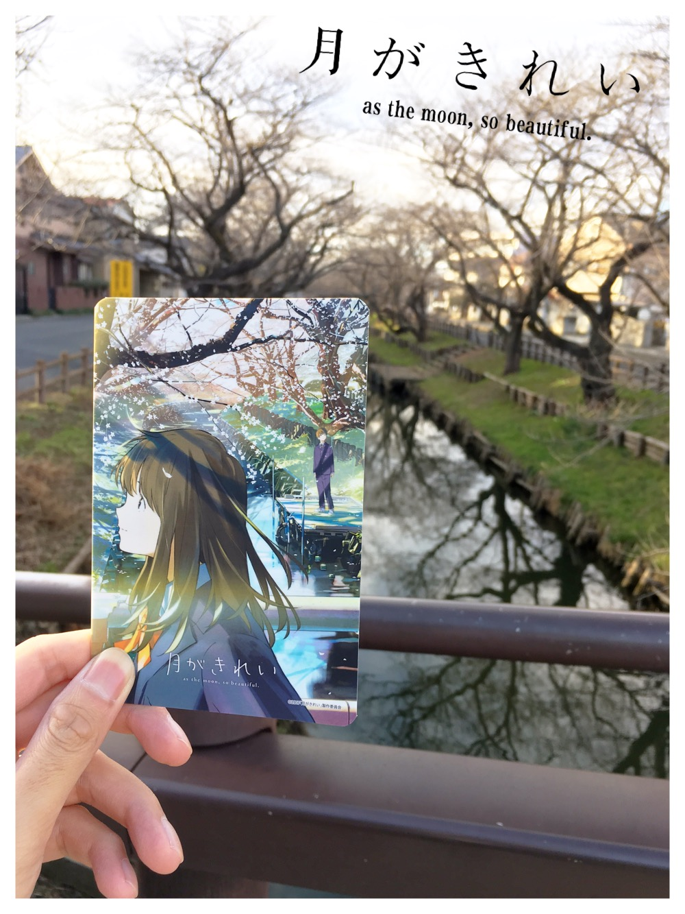 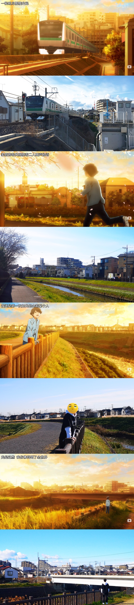 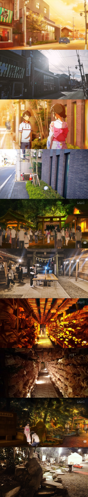 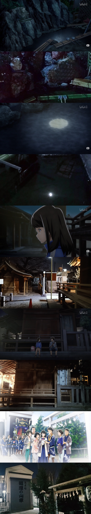 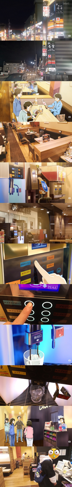 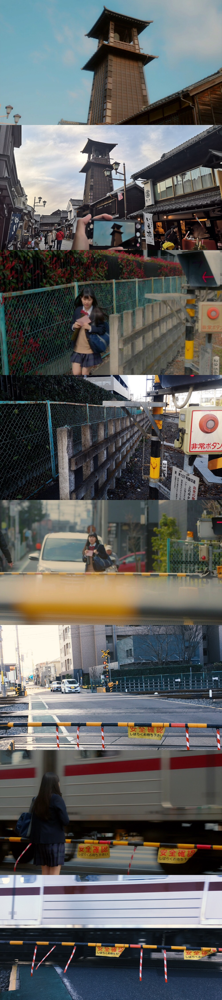 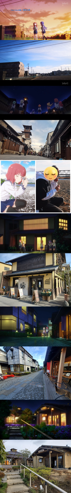
1.11 2020年的第一场live，就从打架开始。全站live house，昼场1000+的番号默默跑到最后面摸鱼，夜场休息好了1200+番号爆干打到了第二排正中。
“这么巧你也在这！你多少号？”
“我200多你呢？”
“我1200多。[社会社会]”（是真的w）
这次最大的惊喜是听到了日本的传统弦乐器三味线。闹的三单「灯火のまにまに」是一首现代摇滚加上传统弦乐器古今结合的和风歌曲（av69205698 有兴趣的可以来听听看），个人非常喜欢，虽然也听过很多次的现场但都没有三味线的伴奏。但这次有了！专门请来了三单灯火MV里出演的三味线小哥生伴奏，真的太正了。闹也应景的换了套和风和服，在三味线的加持下唱了几首自己适合和风的抒情曲。最后新歌小行星op，一句话总结就是，东 山 大 法 好 ！
1.12 在朋友的推荐和带领下去恰了鹅肝面。这个鸭肉鹅肝面太顶了，端上来就是扑鼻的香味。面硬度适中，咬起来有劲道又不会太费力，油而不腻，特爽口。鸭肉是冷吃，瘦肉部分很嫩，油脂部分吃起来像啫喱。鹅肝煎的有股焦香，外焦里嫩，在嘴里特别滑。整体上对我这口味偏重的人来说刚好，口味轻的人可能会觉得稍咸。分量也很足，1200简直买到赚到。满足！
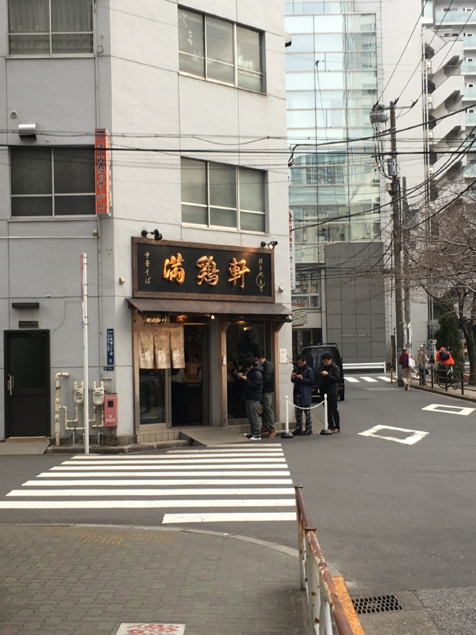 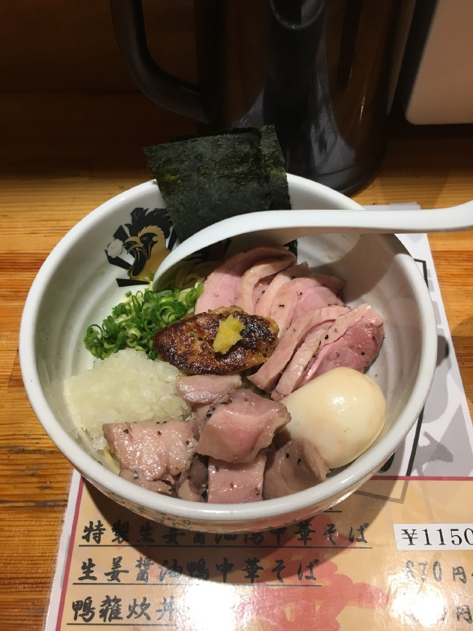 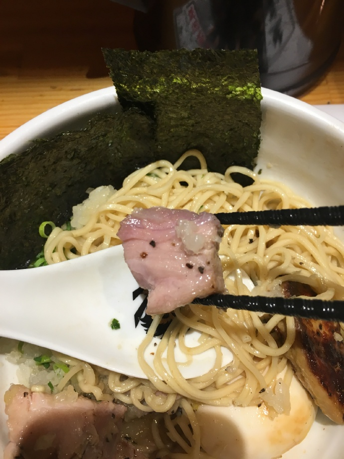 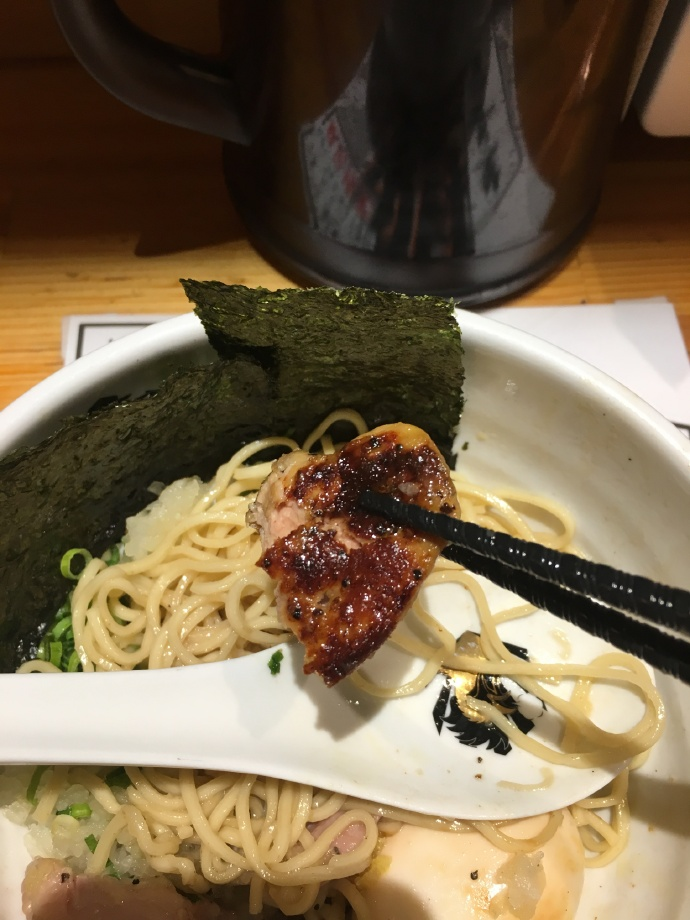 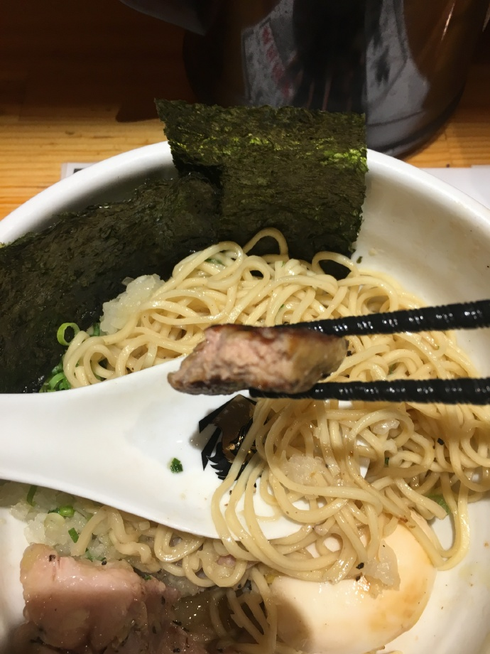 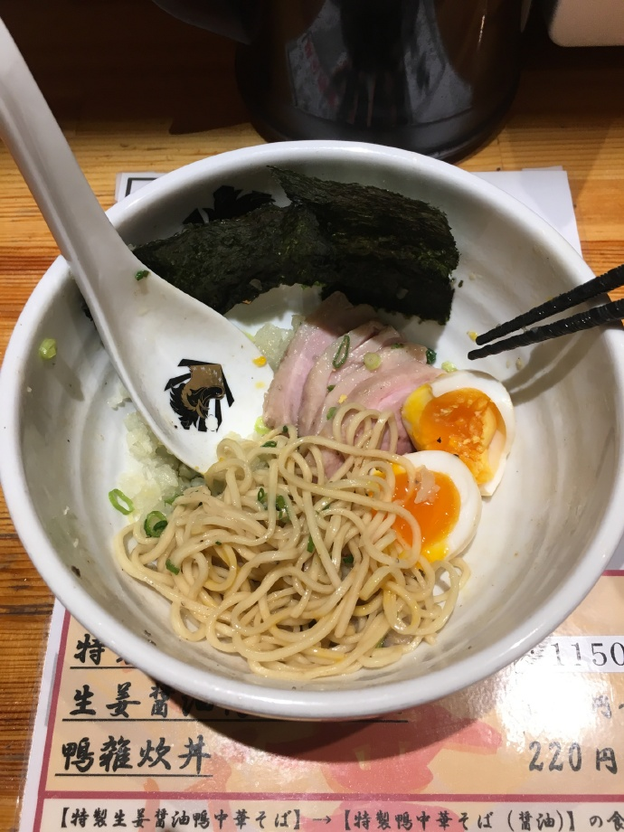1.13 去听了梦寐已久的『響け！ユーフォニアム』吹奏音乐会。现场的演奏同样由为吹吹配乐的冼足学院音乐大学负责。两季加剧场版的op，吹奏乐伴奏TRUE完美的唱功，宛如天籁一般。作品中的名曲连奏穿插着声优们的现场生配，真的有种在看动画的感觉。优子部长期间没有做到的事，山冈在现场带着大家做到了。“北宇治、ファイト！”“おっ！”专门改编了利兹与青鸟的片尾曲Songbirds，两个小姐姐一个双簧管一个长笛专门演奏，我。今年比赛北宇治的自选曲目『リズと青い鳥』，第三乐章「愛ゆえの決断」，双簧管solo清新悠扬的音色响彻整个会馆却又不失柔和，轻亮的长笛陪伴推动着双簧管，二者相辅相成，诉说着利兹与青鸟间断舍离的情感，本青鸟厨真的一本满足。最后的最后，是理所当然的定番比赛固定曲目『三日月の舞』。最后的小号solo担当小姐姐，是为动画中香织前辈配乐的，吹的非常棒。誓言的终章后，三年生迎来隐退，山冈和藤村也表达了自己的不舍，毕竟是陪伴了5年的作品。京阿尼加油，期待着第三季的到来。“来年、金取ろうね！”
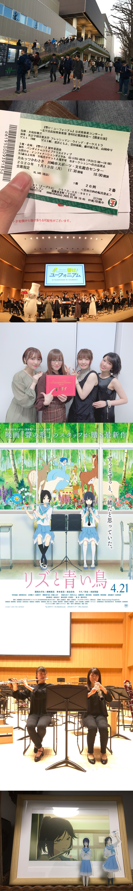